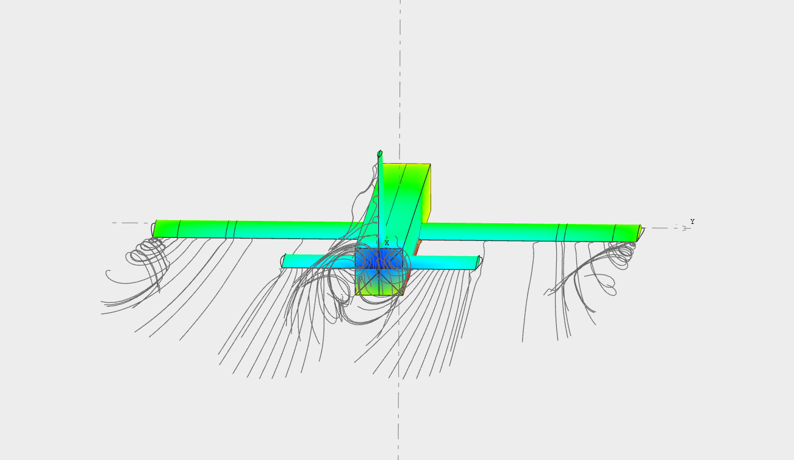

As Aggie engineers in SSFE, we strive to push innovation to new heights through the development of our own aircraft in order to beat our previously set air speed records.
Our target speed to surpass will be determined at the start of each design cycle, and the following two semesters will be spent on aircraft development.
Amidst all of SSFE's successes and failures, we seek to foster a collaborative environment that demonstrates to our members what participating in an engineering project is all about from both a technical and interpersonal perspective.
Our values closely align with those given by the Aggie Honor Code, the Texas A&M University Student Handbook, and legal regulations such as Title IX. We expect our members to uphold a high code of ethics and personal dignity that represents both SSFE and TAMU. Emphasis on instilling honesty and integrity in our members will ensure the success of SSFE and its constituents’ characters. Extensive measures will be taken to ensure the safety and well-being of all of its members and anyone we interact with external to the organization. Other best practices include the prevention of bodily, emotional, and reputational harm and maintaining the financial stability of the organization.